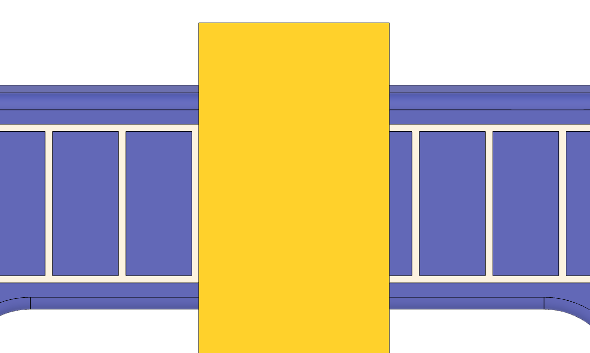

|
|
|
Alignment Jig for the SE-77 |
Alignment Jig for the SE-77
I made this jig using my 3D printer. It is used to make it easier to align the SE-77, ensure that the skew angle is set to 0°.
SE-77 Witness Marks
To align the SE-77, the two thumb screws shown with red caps are used. This jig should be able to be aligned using the witness marks, however I have found them to be a bit crude.
Instead, this alignment jig gives a much clearer alignment process. You attach this jig to the USB with the SE-77. I find it easiest to use with with the USB on the Tormek in the horizontal position.

SE-77 Jig and the Alignment Jig both installed
Use the screws in the alignment jig to set its position. (Do not tighten these screws too tightly as it is easy to strip out the 3D printed material.) Next, slide the SE-77 jig left or right to get the chisel blade aligned with the scale line.
Once everything is installed, the red thumbscrews are adjusted until the chisel (the yellow part) is aligned with the lines on the scale as shown in the center picture below, you are good.
Ensure the alignment screws on the SE-77 jig are tight and that the SE-77 jig does not lose its alignment.
Note: When tightening them, you may adjust the alignment. Do a final check before moving forward.
Be sure to remove the alignment jig before sharpening the chisel.

Aligned to the left |

Aligned true |

Aligned to the right |
The video referenced below, Jigs for the Tormek SE-77, shows how this jig is used.
You can purchase one from Colvin Tools.
The 3D printing file is available as both a 3MF and an STL. I have a printer which can switch filaments during the printing (Bambu Labs P1S with an AMS), and the 3MF file reflects that capability.
The STL file is also available if you would prefer to print it differently.
|
Part |
3MF File |
STL File |
|---|---|---|
Jig with
|
SE-77-Alignment-Jig.3mf | SE-77-Alignment-Jig.stl |
The part is designed to use thumb screws to ensure the jig stays aligned perfectly with the Universal Support Bar (USB). The thumb screws I use are McMaster-Carr p/n 96016A353 (Plastic-Head Thumb Screws, M6-1.0, 10mm thread length).
To use them, you will need to tap the two holes on the ends for the screws. Use a M6-1.0 tap.
These are not critical for the use of this jig, but they are a useful addition. Also note, these were added to the design after the video was posted, but the video has not been updated.
I use a 12.5mm reamer to clean up the holes in this jig for the USB. The 3D printing process does not leave the holes perfectly round, so this helps ensure easy use of this jig.
This is not critical for the use of this jig.
This video also reviews how to use this jig.